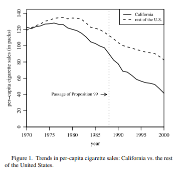
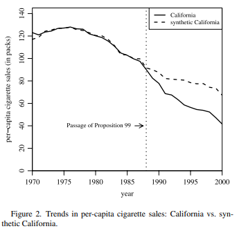

Introdução
O Método de Controle Sintético é um estimador de efeito causal. Em um artigo seminal, “Synthetic Control Methods for Comparative Case Studies” [1], Alberto Abadie, Alexis Diamond e Jens Hainmueller introduzem e aplicam essa técnica para avaliar o impacto do programa de controle de tabaco da Califórnia.
O que é o Método de Controle Sintético?
A ideia central do controle sintético é criar um contrafactual “sintético” para a unidade tratada. Em vez de escolher um único estado como controle, o método constrói uma combinação ponderada de múltiplos estados (o “pool de doadores”). Os pesos são calculados de forma que o controle sintético resultante se assemelhe o máximo possível à unidade tratada antes da implementação da política.
O resultado é uma unidade de controle artificial, ou “sintética”, que representa o que teria acontecido com a unidade tratada se a política nunca tivesse sido implementada. A diferença entre a trajetória real da unidade tratada e a trajetória do seu controle sintético após a intervenção é a nossa estimativa do efeito da política.
Programa anti Tabaco da Califórnia
O artigo de Abadie, Diamond e Hainmueller (ADH) usa o método para avaliar o impacto de um abrangente programa de controle de tabaco implementado na Califórnia em 1988. Esta política incluiu:
- Um aumento de 25 centavos no imposto sobre maços de cigarro.
- Financiamento de campanhas de mídia antitabaco.
- Investimento em educação para a saúde.
- Incentivo a leis locais para ambientes livres de fumo.
O objetivo era claro: reduzir o consumo de tabaco no estado. Para avaliar seu sucesso, os autores precisavam estimar qual teria sido o consumo de cigarros na Califórnia se o programa não tivesse sido implementado.
A Criação da “Califórnia Sintética”
Os autores utilizaram dados de 38 outros estados americanos (o “pool de doadores”) para construir uma “Califórnia Sintética”. O método atribuiu pesos a um pequeno número de estados cujas características, combinadas, melhor reproduziam a trajetória do consumo de cigarros e outras variáveis relevantes da Califórnia no período pré-intervenção (1970-1988).
Os estados que mais contribuíram para a Califórnia Sintética foram:
| Estado | Peso na Combinação |
|---|---|
| Nevada | 0.234 |
| Montana | 0.199 |
| Colorado | 0.164 |
| Connecticut | 0.069 |
| Utah | 0.334 |
Fonte: Abadie, Diamond, e Hainmueller (2010). [1]
É notável que estados vizinhos como Oregon e Arizona, ou grandes estados como Nova York e Texas, receberam peso zero, pois suas trajetórias não ajudavam a replicar a da Califórnia antes de 1988.
Resultados: O Impacto Real da Política Antitabaco
Ao comparar o consumo de cigarros per capita real da Califórnia com o da sua contraparte sintética após 1988, os resultados apontam um efeito causam.



O autores estimaram que, no ano 2000, o consumo de cigarros per capita na Califórnia era cerca de 26 maços menor do que teria sido na ausência da Proposição 99. Isso representa uma redução de aproximadamente 25% no consumo, um efeito substancial e que se tornou mais pronunciado ao longo do tempo.
Efeito dareunificação da Alemanha em 1990 sobre o PIB
A questão que os pesquisadores Alberto Abadie, Alexis Diamond e Jens Hainmueller se propuseram a responder em seu artigo “Comparative Politics and the Synthetic Control Method” [2] é aparentemente simples, mas metodologicamente complexa: Qual foi o custo econômico da reunificação para a Alemanha Ocidental?
O Desafio: Como Encontrar um Contrafactual para a História?
Após a queda do Muro de Berlim, a Alemanha Ocidental iniciou o monumental processo de integração da Alemanha Oriental. Isso envolveu transferências massivas de capital, reestruturação industrial. Intuitivamente, esse processo teve um custo econômico para os alemães ocidentais, mas como medi-lo?
Não podemos simplesmente comparar o crescimento da Alemanha pós-1990 com o de outro país. O Reino Unido? Os EUA? O Japão? Nenhum desses países serve como um “gêmeo” perfeito para a Alemanha Ocidental. Cada um tem sua própria trajetória econômica, suas próprias políticas e seus próprios choques. Uma comparação direta seria, na melhor das hipóteses, imprecisa e, na pior, completamente enganosa. É precisamente para resolver este tipo de problema que o método de controle sintético foi projetado.
Construindo a “Alemanha Ocidental Sintética”
Os autores do estudo usaram dados de 1960 a 2003 para a Alemanha Ocidental e um “pool de doadores” composto por 16 outros países desenvolvidos da OCDE (como EUA, Japão, Reino Unido, França, etc.). O objetivo era usar os dados do período pré-reunificação (1960-1989) para construir uma Alemanha Ocidental Sintética.
O algoritmo de otimização buscou uma combinação ponderada desses 16 países que melhor se assemelhasse à Alemanha Ocidental real antes de 1990, com base em preditores-chave do crescimento econômico, como:
- PIB per capita em anos anteriores
- Taxa de inflação
- Abertura comercial
- Participação da indústria no PIB
- Níveis de escolaridade e investimento
O resultado foi uma Alemanha Sintética composta por uma mistura de cinco países, cujas características combinadas espelhavam de forma notável a trajetória econômica da Alemanha Ocidental antes da queda do muro.
| País | Peso no Controle Sintético |
|---|---|
| Áustria | 0.42 |
| Estados Unidos | 0.22 |
| Japão | 0.16 |
| Suíça | 0.11 |
| Holanda | 0.09 |
Fonte: Abadie, Diamond, e Hainmueller (2015). [1]
Resultados encontrados
Com a Alemanha Sintética construída, os autores puderam comparar sua trajetória de PIB per capita com a da Alemanha Ocidental real após 1990. O resultado é visualmente impressionante.
No período pré-reunificação, as trajetórias do PIB per capita para a Alemanha Ocidental e sua contraparte sintética são extremamente próximas. Após a reunificação, no entanto, as trajetórias divergem. O PIB per capita na Alemanha Ocidental cai acentuadamente em relação ao da Alemanha sintética. [1]
Os resultados quantitativos indicam que a reunificação teve um custo econômico substancial e duradouro para a Alemanha Ocidental. Em média, o evento reduziu o PIB per capita em cerca de $1.600 dólares por ano durante o período de 1990 a 2003. Isso representa uma perda agregada de aproximadamente 8% do PIB da Alemanha Ocidental em 1990.
A seguir o excel com a intuição do passo-a-passo para a construção da Alemanhã sintética, uma vez que os vetores de pesos foram encontrados:
Referências
[1] Abadie, A., Diamond, A., & Hainmueller, J. (2010). Synthetic Control Methods for Comparative Case Studies: Estimating the Effect of California’s Tobacco Control Program. Journal of the American Statistical Association, 105(490), 493-505.
[2] Abadie, A., Diamond, A., & Hainmueller, J. (2015). Comparative Politics and the Synthetic Control Method. American Journal of Political Science, 59(2), 495-510.